Tensor composition
Contents
function AB = tensor_composition(A,B,P,SIZE)
TENSOR_COMPOSITION
This function computes the composite product of sparse tensor A with the sparse tensors contained in the cell array B in the order specified by the rows of index array P. The returned tensor AB of size SIZE is obtained by summing over the products for each row of indices.
Let the input A be an 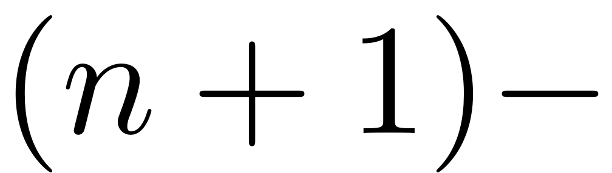 dimensional tensor and the input B be a $s-$cell array 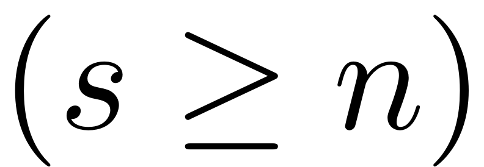 contain tensors 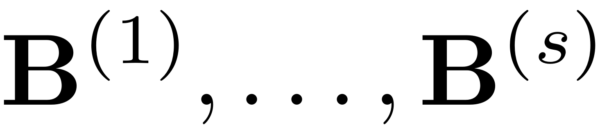 and the input P be an 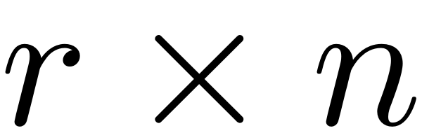 index matrix 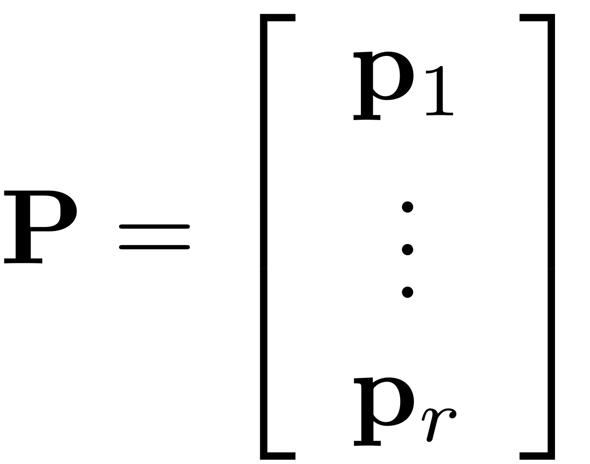. We denote 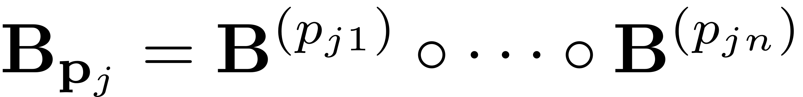 and compute the tensor composition
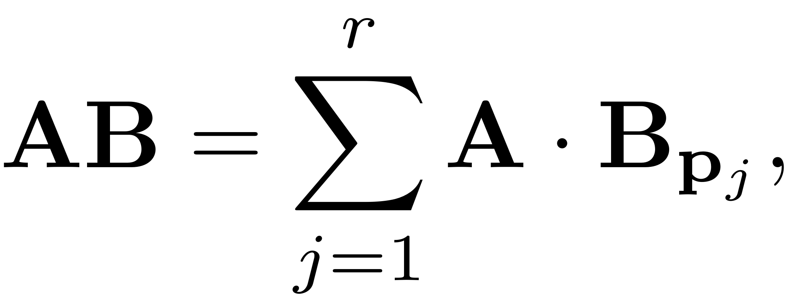
where 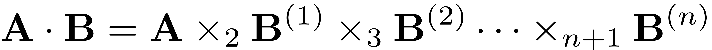 is a Tucker-type product.
AB = sptensor(SIZE); parfor j_p = 1:size(P,1) p = P(j_p,:); AB_p = tensor_product(A,B(p)); AB = AB + AB_p; end AB = sptensor(AB);
end function [AB] = tensor_product(A,B)
TENSOR_PRODUCT
This function uses the Sandia Tensor Toolbox to compute the product of sparse tensor A with the sparse tensors contained in the cell array B.
The outer product 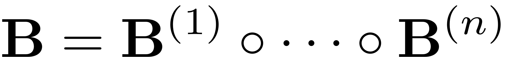 has dimensionality 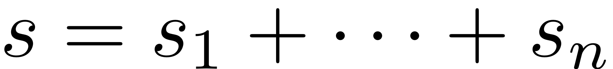. We compute the Tucker-type tensor product by multiplying the last  modes of with the first modes of 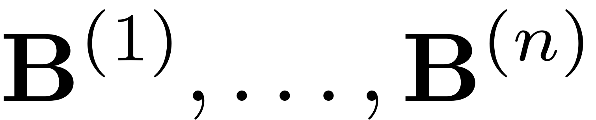 respectively. The resulting tensor has size 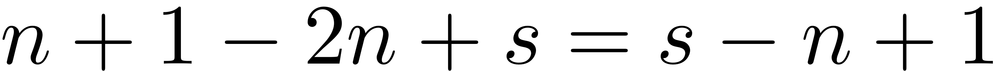. The same is achieved by the following:
modes of with the first modes of 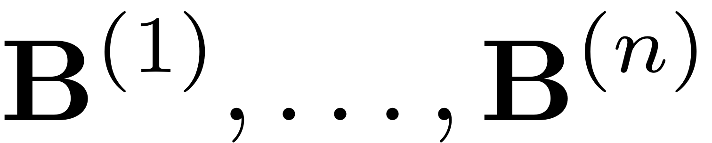 respectively. The resulting tensor has size 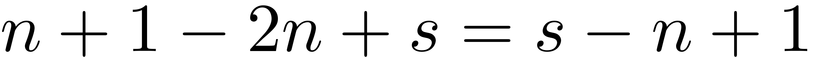. The same is achieved by the following:
AB = A; for k = 1:length(B) AB = sptensor(ttt(AB,B{k},2,1)); end
end